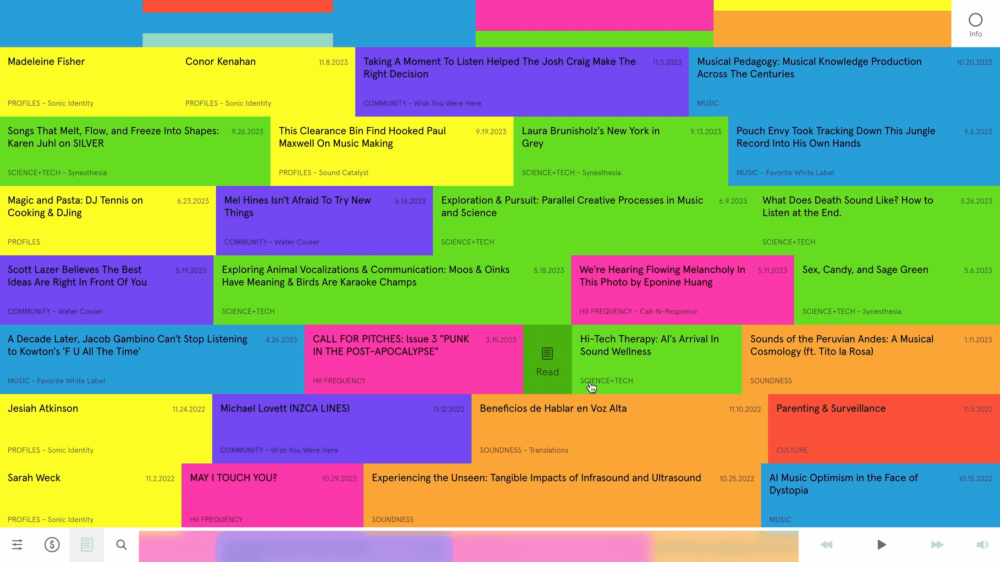

CASE STUDIES & INSPIRATION.

NewActon Website.
NewActon is a public mixed-use precinct located in Canberra, Australia. The combination of sustainable architecture, vibrant public art and well-curated gardens creates a comforting space that bridges urban life and nature.
The website reflects the solace of the space with responsive doodle illustrations as icons. The simple floating animation of the icons alongside the gradual shifting colours further adds to the sense of calmness the precinct is intended to evoke.
The overall layout is minimal and can be easily navigated with only a few clicks. Everything is clearly displayed on the screen with minor scrolling.

Hii Magazine
Hii Magazine is an audio publication founded by New York City based studio, One Thousand Birds. It focuses on exploring human experience through sound in media, such as film, television, music, art and culture.
Hii Magazine is offered in both print magazine and an interactive website to provide access to the audio concepts explored. The website it self is chaotically organised in both layout and colour.
Viewers are visually overwhelmed by the chaos of colour, contrasting with the more subdued audio narrations offered alongside the browsing experience.

Open Doodles.
Open Doodles is a set of free illustrations that embraces the idea of Open Design, allowing designers to copy, edit, mix or redraw any of the illustrations without any restrictions under copyright law.
I like how the illustrations are organised in a uniform grid, which complements the free-drawn and playful aspect of the doodle illustrations.
My attention is also drawn to the simple animated animations that are placed throughout the page, adding a sense of movement that breaks from the otherwise stagnant drawings.